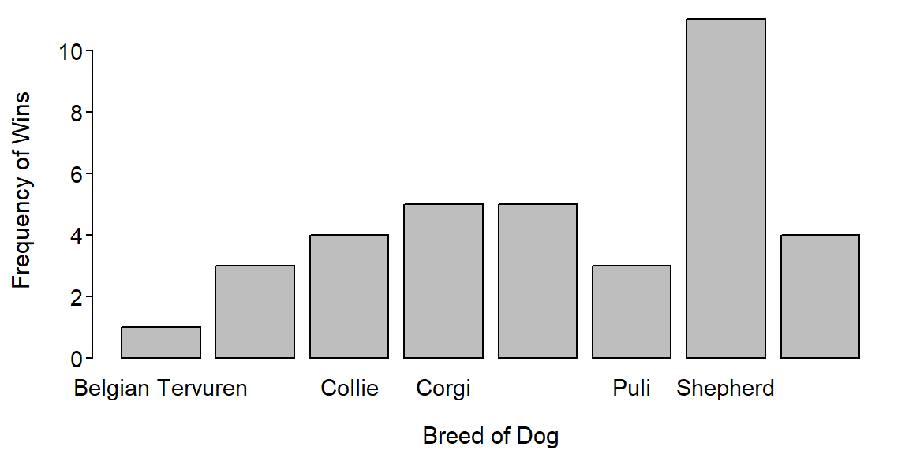
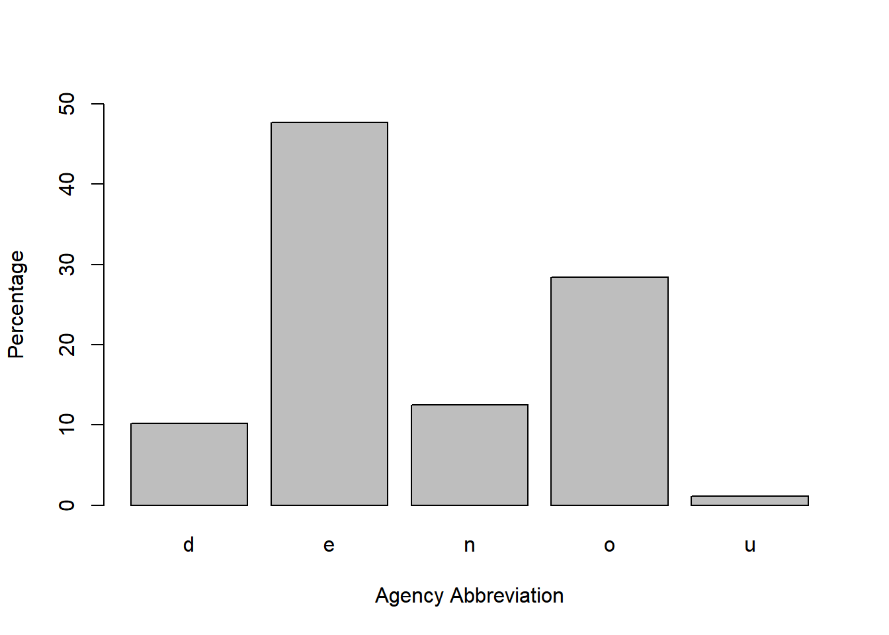
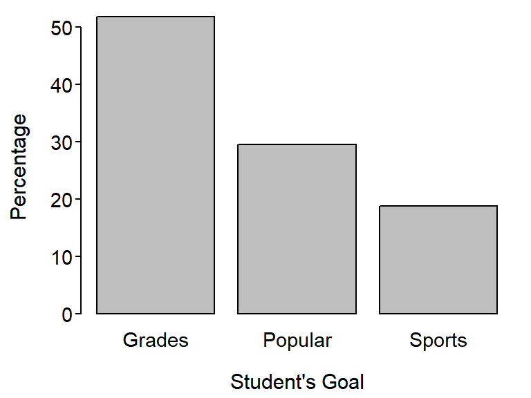
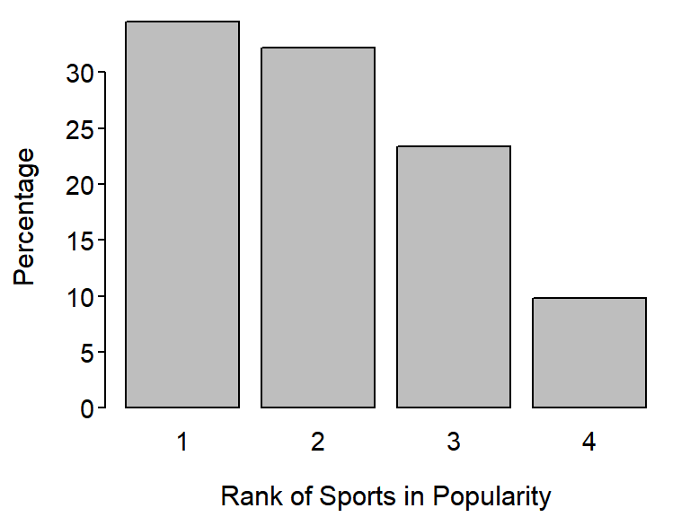
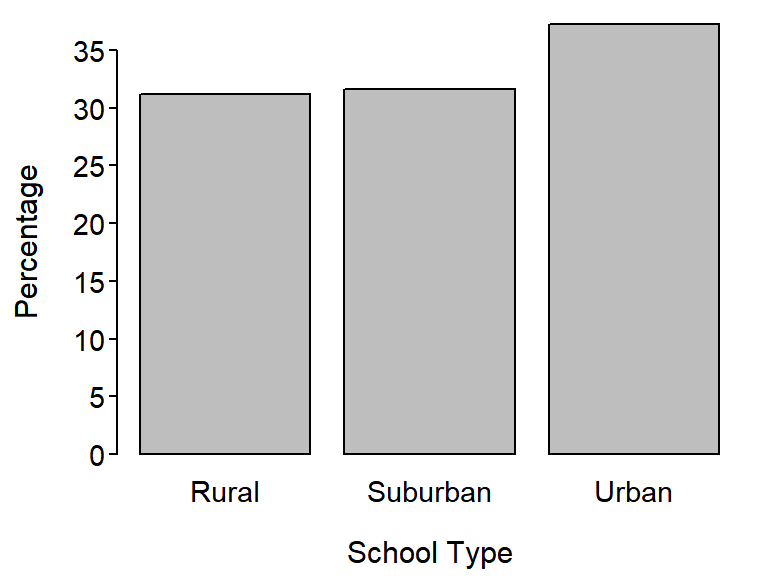

Should be performed by hand to match results below
group
Belgian Tervuren Bouvier Des Flandres Collie Corgi
1 3 4 5
Old English Sheepdog Puli Shepherd Shetland Sheepdog
5 3 11 4 > percTable(tbl,digits=1)group
Belgian Tervuren Bouvier Des Flandres Collie Corgi
2.8 8.3 11.1 13.9
Old English Sheepdog Puli Shepherd Shetland Sheepdog
13.9 8.3 30.6 11.1 
Love Money Pregnancy Other
45 1 0 4 Love Money Pregnancy Other
90 2 0 8 Table 1: Percentage of coarse woody debris sites by level of exposure (low or medium).
exposure
low med
18 82 R Appendix.
d <- read.csv("cwd.csv")
tbl <- xtabs(~exposure,data=d)
percTable(tbl,digits=1,addMargins=FALSE)Most respondents thought that the Environmental Protection Agency was the agency that disposed of chemical wastes followed by the Occupational Safety and Health Administration (Table 2; Figure 1). Relatively few people thought the Department of Transportation or National Institutes of Health disposed of chemical wastes.
Table 2: Percentages table for perceived choice of agency that disposes of chemical waste. Abbreviations are: d=Department of Transportation, e=Environmental Protection Agency, n=National Institutes of Health, o=Occupational Safety and Health Administration, and u=unanswered.
agency
d e n o u
10.2 47.7 12.5 28.4 1.1 
Figure 1: Bar chart of percentages by perceived choice of agency that disposes of chemical waste. Abbreviations are in Table 2.
R Appendix.
d <- read.csv("4_51.csv")
( a.tbl <- xtabs(~agency,data=d) )
( p.tbl <- percTable(a.tbl) )
barplot(p.tbl,xlab="Agency Abbreviation",ylab="Percentage",ylim=c(0,50))Table 3: Percentage of grade school children by their stated goal.
goals
Grades Popular Sports
51.7 29.5 18.8 
Figure 2: Bar chart of percentage of grade school children by their stated goal.
Table 4: Percentage of grade school children by their rank of the impiortance of being good in sports (1=most important).
sports
1 2 3 4
34.5 32.2 23.4 9.8 
Figure 3: Bar chart of percentage of grade school children by their rank of the importance of being good in sports (1=most important).
Table 5: Percentage of grade school children by location of their school.
type
Rural Suburban Urban
31.2 31.6 37.2 
Figure 4: Bar chart of percentage of grade school children by location of their school.
R Appendix.
d <- read.csv("PopularKids.csv")
tbl1 <- xtabs(~goals,data=d)
( ptbl1 <- percTable(tbl1,digits=1,addMargins=FALSE) )
barplot(ptbl1,xlab="Student's Goal",ylab="Percentage")
tbl2 <- xtabs(~sports,data=d)
( ptbl2 <- percTable(tbl2,digits=1,addMargins=FALSE) )
barplot(ptbl2,xlab="Rank of Sports in Popularity",ylab="Percentage")
tbl3 <- xtabs(~type,data=d)
( ptbl3 <- percTable(tbl3,digits=1,addMargins=FALSE) )
barplot(ptbl3,xlab="School Type",ylab="Percentage")Most students left the water on for between 6 and 15 minutes, with students approximately evenly split between 6-10 and 11-15 minutes (Table 6). Few students left the water on for less than 5 minutes before entering the shower.
Table 6: Percentage table for how much time students at Rice University leave the water on before entering the shower. Note that A=0-5 mins, B=6-10 mins, C=11-15 mins, and D=more than 15 mins.
water
A B C D
5.4 37.7 40.0 16.9 R Appendix.
setwd('C:/aaaWork/Books/IntroStats/HW/')
df <- read.csv("WaterUsage.csv")
freq <- xtabs(~water,data=df)
perc <- percTable(freq,digits=1)